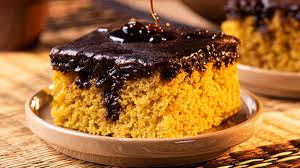

Olá, Bem-Vindo ao Saia de Baixo da Saía da sua MÃE!!
A FAZER RECEITAS CASEIRAS SOZINHO E SURPREENDA SUA MÃE.
Frase do Dia...
A vida é bela
igual flor amarela
tal como um quadro pintado
com aquarela.
E HOJE APRENDEREMOS:
Como Fazer Bolo de Cenoura Caseiro?

RECEITA
INGREDIENTES:
3 ÓVOS
2 XÍCARAS DE ÓLEO
2/4 XÍCARA DE LEITE
3/4 FARINHA DE TRIGO
3 COLHERES DE MARGARINA
1 XÍCARA DE CHÁ DE PÓ ROIAL
Acompanhe o Modo de Preparo no Site Abaixo:
Clique Aqui
Segunda Página